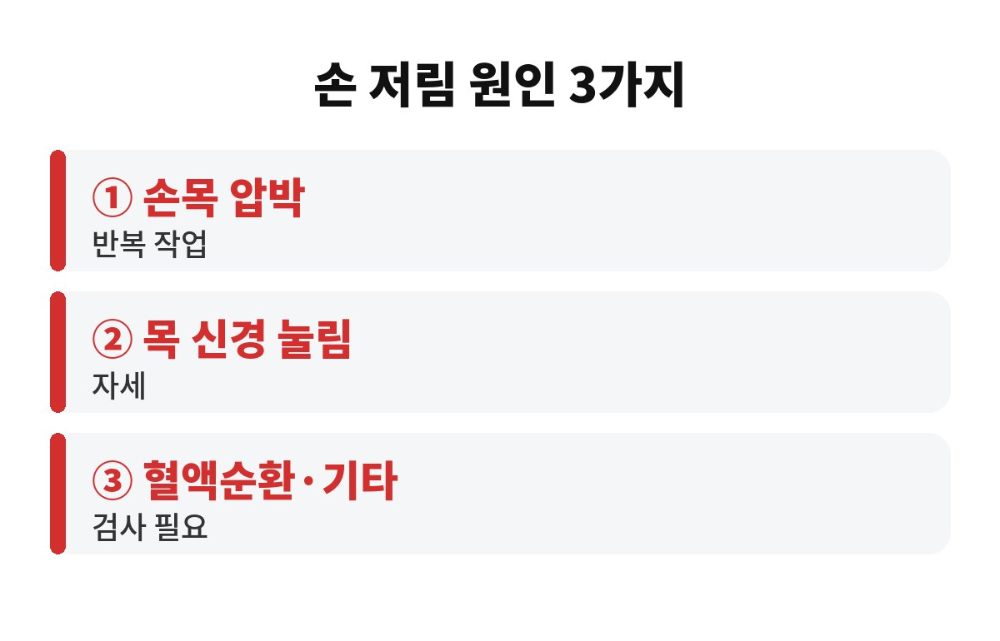

아침 손 저림 원인은 크게 손목, 목, 혈액순환 3가지로 나눠 볼 수 있어요. 자고 일어났는데 손이 찌릿하고 감각이 둔했다면, 몸이 보내는 작은 신호일 수 있습니다.
특히 40·50대라면 한 번쯤 짚고 넘어가야 해요. 털고 나면 괜찮아지는데, 왜 굳이 신경 써야 할까요?
밤새 같은 자세로 누워 있으면 팔이나 손목이 눌리면서 신경이 잠깐 압박을 받아요. 이럴 땐 자세를 바꾸고 손을 털면 금방 풀립니다. 이 정도는 흔히 겪는 일이라 크게 걱정하지 않아도 돼요.
사실 날씨가 쌀쌀해지는 요즘엔 손 저림을 더 자주 느끼는 분들이 많아요. 몸이 움츠러들고 혈관이 오므라들면서 손끝까지 피가 덜 돌 수 있고, 이불을 끌어안고 자는 습관까지 겹치면 팔이 눌리기 쉽거든요. 그래서 계절이 바뀌는 지금 시기에 증상을 처음 알아채는 경우도 흔합니다.
문제는 이런 일이 며칠, 몇 주씩 반복될 때예요. 손 저림 원인이 단순한 자세가 아니라 신경이 계속 눌리는 상태일 수 있거든요. 그래서 "가끔"인지 "자주"인지 구분하는 게 첫걸음입니다.
가장 많이 거론되는 원인은 손목 안쪽 통로가 좁아지면서 신경이 눌리는 경우예요. 컴퓨터 마우스, 스마트폰, 집안일처럼 손목을 반복해서 쓰는 분들에게 잘 나타난다고 알려져 있어요. 엄지부터 약지까지 저리고, 밤이나 새벽에 더 심해지는 게 특징으로 꼽힙니다.
반대로 목 쪽 신경이 눌려도 손이 저릴 수 있어요. 이럴 땐 손만의 문제가 아니라 목이나 어깨가 뻐근하고, 팔 전체로 퍼지는 느낌이 함께 오는 경우가 많죠. 베개가 너무 높거나 낮아도 영향을 줄 수 있어요.
또 하나 기억해 둘 점은 저림의 "모양"이에요. 어느 손가락이 저린지, 낮에도 그런지 밤에만 그런지, 한쪽인지 양쪽인지를 메모해 두면 병원에서 설명하기가 훨씬 쉬워집니다. 휴대폰 메모장에 며칠만 적어 두어도 진료받을 때 큰 도움이 돼요. 의사 선생님도 이런 기록을 가장 반가워하시거든요.
| 구분 | 이런 느낌이라면 |
| 손목 쪽 | 엄지~약지 저림, 새벽에 심함 |
| 목 쪽 | 목·어깨 뻐근함, 팔까지 퍼짐 |
| 혈액순환·기타 | 손발 차가움, 양쪽이 함께 저림 |

손이 차갑고 색이 창백해지거나, 양쪽 손이 동시에 저리면 혈액순환이나 다른 건강 문제가 숨어 있을 수도 있어요. 당뇨나 갑상선 같은 질환이 영향을 주는 경우도 있다고 알려져 있어서, 이 부분은 집에서 짐작하기보다 검사로 확인하는 게 맞습니다.
손목과 목은 서로 가까워서 증상만으로는 헷갈리기 쉬워요. 그래서 스스로 판단해 "나는 손목이니까 파스 붙이면 되겠지" 하고 넘기다가 시기를 놓치는 일이 생기기도 합니다. 원인에 따라 관리법이 달라지니, 이름 모를 민간요법에 매달리기보다 정확히 아는 게 먼저예요.
"설마 나는 아니겠지" 하고 미루는 분이 정말 많아요. 하지만 신경은 오래 눌릴수록 회복이 더딜 수 있다고 하니, 증상이 계속된다면 일찍 확인하는 쪽이 이득이에요.
우선 자기 전에 손목을 가볍게 펴 주고, 잘 때 손목을 심하게 꺾은 채 잠들지 않도록 신경 써 보세요. 베개 높이가 목에 맞는지도 점검하면 좋아요. 낮에는 한 시간에 한 번쯤 손을 털고 손목을 돌려 주면 부담이 줄어듭니다.
생활 습관도 한 번 돌아보세요. 스마트폰을 누워서 오래 보거나, 팔베개를 하고 자거나, 한 손으로만 무거운 가방을 드는 습관은 신경을 은근히 괴롭혀요. 하루 중 손을 가장 많이 쓰는 시간대를 떠올려 보고, 그때 잠깐씩 쉬어 주는 것만으로도 달라지는 분들이 많습니다.
다만 저림이 일주일 넘게 이어지거나, 힘이 빠져 물건을 자꾸 떨어뜨리거나, 한쪽 팔다리에 갑자기 힘이 없어진다면 바로 병원에 가야 해요. 이런 경우는 미루지 마세요.
여러분은 아침에 손이 저린 적 있으신가요? 어느 쪽 손이 더 그랬는지 댓글로 남겨 주세요. 도움이 됐다면 구독과 공감도 부탁드려요!
※ 본 글은 일반적인 건강 정보이며 진단을 대신하지 않습니다. 증상이 있다면 전문의 상담을 권장합니다.